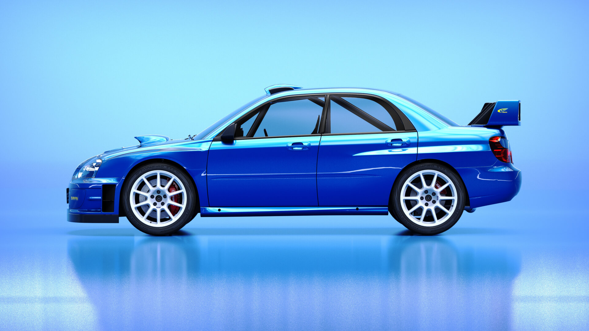
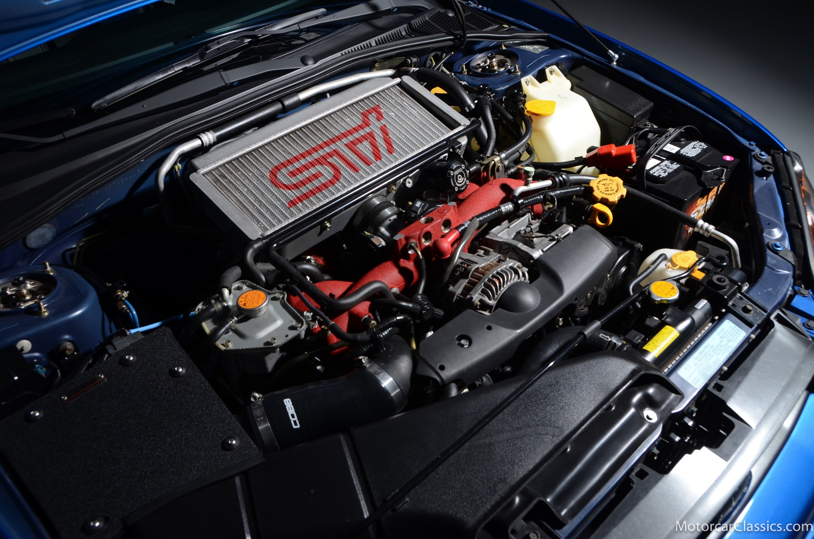
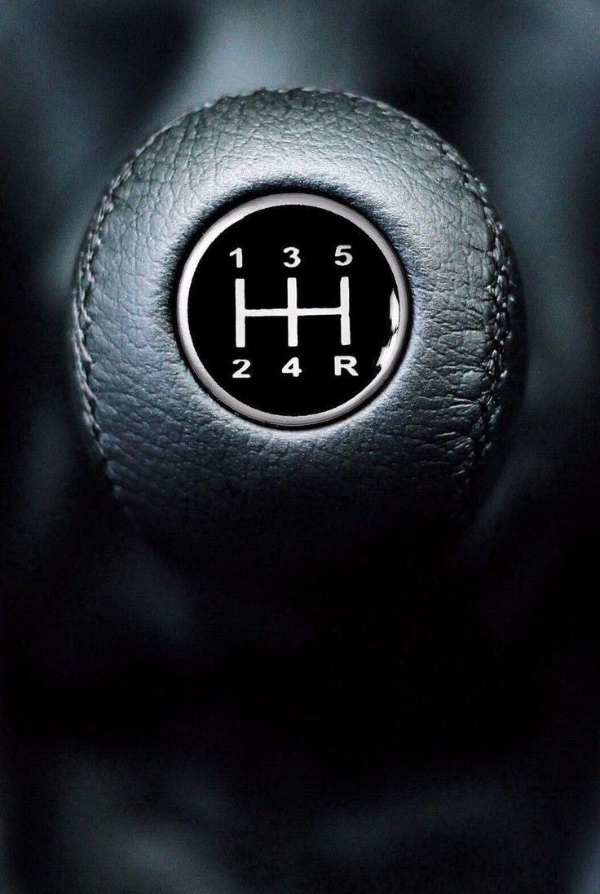
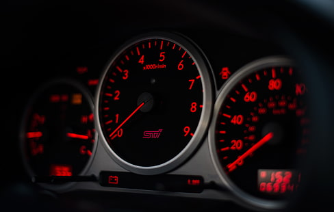
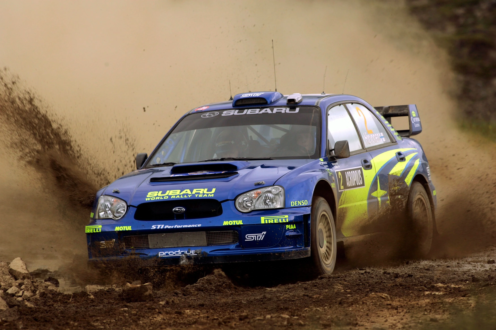
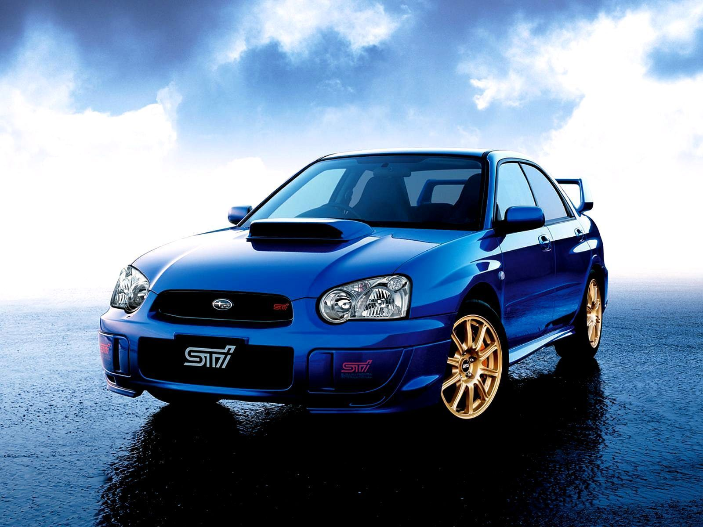

Introduction
The 2004 Subaru WRX STI is a legendary rally-inspired car, known for its impressive performance, unique design, and cult following. It’s a vehicle that delivers an exhilarating driving experience both on and off the track.
Specifications
Engine
The WRX STI is powered by a 2.5L turbocharged Boxer engine producing 300 horsepower and 300 lb-ft of torque.
Transmission
This model comes with a 6-speed manual transmission, offering precise control and a thrilling drive.
Performance
With its all-wheel-drive system, the WRX STI can accelerate from 0-60 mph in under 5 seconds, making it a true performance car.
Why It's Loved
Rally Heritage
The WRX STI’s design and engineering draw directly from Subaru’s success in rally racing, bringing a race-ready feel to the streets.
Iconic Design
With its signature hood scoop, rear wing, and aggressive styling, the WRX STI is instantly recognizable and admired by car enthusiasts.
Community
This model has a dedicated fan base, with forums, clubs, and events that bring WRX STI owners together.